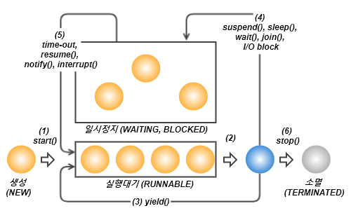
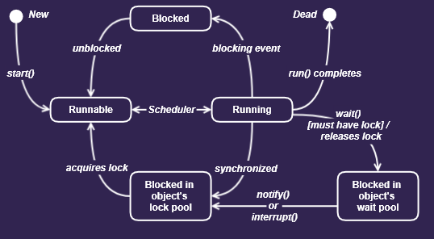

스레드의 실행제어
스레드 프로그래밍이 어려운 이유는 동기화(synchronization)와 스케쥴링(scheduling)때문입니다. 효율적인 멀티스레드 프로그램을 만들기 위해서는 보다 정교한 스케쥴링을 통해 프로세스에게 주어진 자원과 시간을 여러 스레드가 낭비없이 잘 사용하도록 프로그래밍 해야 합니다.
스레드의 스케쥴링과 관련된 메서드
|
static void sleep(long millis) static void sleep(long millis, int nanos) : 지정된 시간(천분의 일초 단위)동안 스레드를 일시정지시킵니다. 지정한 시간이 지나고 나면, 자동적으로 다시 실행대기상태가 됩니다. |
|
void join() void join(long millis) void join(long millis, int nanos) : 지정된 시간동안 스레드가 실행되도록 합니다. 지정된 시간이 지나거나 작업이 종료되면 join()을 호출한 스레드로 다시 돌아와 실행을 계속합니다. |
|
void interrupt()
: sleep()이나 join()에 의해 일시정지상태인 스레드를 깨워서 실행대기상태로 만듭니다. 해당 스레드에서는 InterruptedException이 발생함으로써 일시정지상태를 벗어나게 됩니다. |
|
void stop()
: 스레드를 즉시 종료시킵니다. |
|
void suspend()
: 스레드를 일시정지시킵니다. resume()을 호출하면 다시 실행대기상태가 됩니다. |
|
void resume()
: suspend()에 의해 일시정지상태에 있는 스레드를 실행대기상태로 만듭니다. |
|
static void yield()
: 실행중에 자신에게 주어진 실행시간을 다른 스레드에게 양보(yield)하고 자신은 실행대기상태가 됩니다. |
스레드의 상태
|
NEW
: 스레드가 생성되고 아직 start()가 호출되지 않은 상태 |
|
RUNNABLE
: 실행중 또는 실행가능한 상태 |
|
BLOCKED
: 동기화블럭에 의해서 일시정지된 상태(lock이 풀릴 때까지 기다리는 상태) |
|
WAITING, TIMED_WAITING
: 스레드의 작업이 종료되지는 않았지만 실행가능하지 않은(unrunnable) 일시정지상태. TIMED_WAITING은 일시정지시간이 지정된 경우를 의미합니다. |
|
TERMINATED
: 스레드의 작업이 종료된 상태 |
스레드의 상태
스레드의 상태 다이어그램
- 스레드를 생성하고 start()를 호출하면 바로 실행되는 것이 아니라 실행대기열에 저장되어 자신의 차례가 될때까지 기다려야 합니다. 실행대기열은 큐(queue)와 같은 구조로 먼저 실행대기열에 들어온 스레드가 먼저 실행됩니다.
- 실행대기상태에 있다가 자신의 차례가 되면 실행상태가 됩니다.
- 주어진 실행시간이 다 되거나 yield()를 만나면 다시 실행대기상태가 되고 다음 차례의 스레드가 실행상태가 됩니다.
- 실행 중에 suspend(), sleep(), wait(), join(), I/O block에 의해 일시정지상태가 될 수 있습니다. I/O block은 입출력작업에서 발생하는 지연상태를 말합니다. 사용자의 입력을 기다리는 경우를 예로 들 수 있는데, 이런 경우 일시정지 상태에 있다가 사용자가 입력을 마치면 다시 실행대기 상태가 됩니다.
- 지정된 일시정지시간이 다되거나(time-out), notify(), resume(), interrupt()가 호출되면 일시정지상태를 벗어나 다시 실행대기열에 저장되어 자신의 차례를 기다리게 됩니다.
- 실행을 모두 마치거나 stop()이 호출되면 스레드는 소멸됩니다.
* 위의 순서대로 항상 스레드가 동작하는 것은 아닙니다.
sleep(long millis)
sleep()는 지정된 시간동안 스레드를 멈추게 합니다.
sleep(long millis)
sleep(long millis, int nanos)
밀리세컨드(millis, 1000분의 1초)와 나노세컨드(nanos, 10억분의 1초)의 시간단위로 세밀하게 값을 지정할 수 있지만 어느 정도의 오차가 발생할 수 있습니다.
sleep()에 의해 일시정지 상태가 된 스레드는 지정된 시간이 다 되거나 interrupt()가 호출되면, InterruptedException이 발생되어 잠에서 깨어나 실행대기 상태가 됩니다.
그래서 sleep()을 호출할 때는 항상 try-catch문으로 예외를 처리해줘야 합니다.
Example sources
interrupt()와 interrupted()
진행 중인 스레드의 작업이 끝나기 전에 취소시켜야할 때가 있습니다.
interrupt()는 스레드에게 작업을 멈추라고 요청을 합니다. 하지만 단지 멈추라고 요청만 하는 것일 뿐 스레드를 강제로 종료시키지는 못합니다.
interrupt()는 그저 스레드의 interrupted상태(인스턴스 변수)를 바꾸는 것일 뿐입니다.
interrupted()는 스레드에 대해 interrupt()가 호출되었는지를 알려줍니다. interrupt()가 호출되지 않았다면 false를,interrupt()가 호출되었다면 true를 반환합니다.
isInterrupted()도 스레드의 interrupt()가 호출되었는지 확인하는데 사용할 수 있지만, interrupted()와 달리 interrupted상태를 false로 초기화하지 않습니다.
void interrupt() 스레드의 interrupted상태를 false에서 true로 변경.
boolean isInterrupted() 스레드의 interrupted상태를 반환.
static boolean interrupted() 현재 스레드의 interrupted상태를 반환 후, false로 변경.스레드가 sleep(), wait(), join()에 의해 일시정지 상태(WAITING)에 있을 때, 해당 스레드에 대해 interrupt()를 호출하면, sleep(), wait(), join()에서 InterruptedException이 발생하고 스레드는 실행대기 상태(RUNNABLE)로 바뀝니다. 즉, 멈춰있던 스레드를 깨워서 실행가능한 상태로 만드는 것입니다.
Example sources
suspend(), resume(), stop()
suspend()는 sleep() 처럼 스레드를 멈추게 합니다. suspend()에 의해 정지된 스레드는 resume()을 호출해야 다시 실행대기 상태가 됩니다.
stop()은 호출되는 즉시 스레드가 종료됩니다.
suspend(), resume(), stop()은 스레드의 실행을 제어하는 가장 손쉬운 방법이지만, suspend(), stop()이 교착상태(deadlock)를 일으키기 쉽게 작성되어있으므로 사용이 권장되지는 않습니다.
* 이 메서드들은 모두 deprecated 되어있습니다.
yield()
yield()는 스레드 자신에게 주어진 실행시간을 다음 차례의 스레드에게 양보합니다.
yield()와 interrupt()를 적절히 사용하면, 프로그램의응답성을 높이고 보다 효율적인 실행이 가능하도록 할 수 있습니다.
join()
스레드는 자신이 하던 작업을 잠시 멈추고 다른 스레드가 지정된 시간동안 작업을 수행하도록 할 때 join()을 사용합니다.
join()
join(long millis)
join(long millis, int nanos)
시간을 지정하지 않으면, 해당 스레드가 작업을 모두 마칠 때까지 기다리게 됩니다. 작업 중에 다른 스레드의 작업이 먼저 수행되어야할 필요가 잇을 때 join()을 사용합니다.
join()도 sleep()처럼 interrupt()에 의해서 대기상태에서 벗어날 수 있으며, join()이 호출되는 부분을 try-catch문으로 감싸야 합니다.
join()과 sleep()의 다른점은 현재 스레드가 아닌 특정 스레드에 대해 동작하므로 static메서드가 아니라는 점입니다.